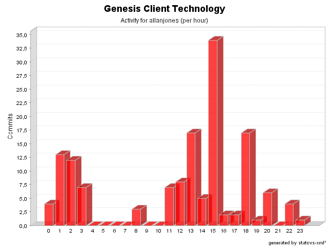

| Login: allanjones Fullname: allanjones Revisions: 143 Lines of Code: 2886 Added Lines of Code: 3689 Lines of Code per Change: 20,2 |

| Date | Author | File/Message |
|---|---|---|
| 17/12/05 13:46 | allanjones | merge from 2.3-RC3
(8 Files changed,
253 Lines changed) test-src/net/java/dev/genesis/ui/BasicValidatorTest.java 1.2 added 124 src/net/java/dev/genesis/ui/controller/DefaultFormController.java 1.33
(+7
-3)
src/net/java/dev/genesis/ui/thinlet/BaseThinlet.java 1.35
(+51
-39)
src/net/java/dev/genesis/ui/controller/FormStateImpl.java 1.4
(+11
-1)
src/net/java/dev/genesis/ui/BasicValidator.java 1.7
(+29
-11)
src/validator-rules.xml.sample 1.2
(+10
-0)
src/messages.properties.sample 1.6
(+2
-0)
src/net/java/dev/genesis/ui/thinlet/ThinletBinder.java 1.48
(+19
-9)
|
| 13/03/05 11:27 | allanjones | Removed some script dependencies
(1 Files changed,
0 Lines changed) src/net/java/dev/genesis/script/bsf/BSFScriptFactory.java 1.3
(+0
-4)
|
| 10/03/05 17:01 | allanjones | Minor change in genesis functions syntax for EL
(1 Files changed,
1 Lines changed) src/net/java/dev/genesis/script/el/ELScriptContext.java 1.3
(+1
-1)
|
| 01/03/05 16:02 | allanjones | Fixed unit tests (compilation errors)
(2 Files changed,
11 Lines changed) test-src/net/java/dev/genesis/ui/controller/DefaultFormControllerTest.java 1.3
(+9
-14)
test-src/net/java/dev/genesis/mockobjects/MockForm.java 1.3
(+2
-1)
|
| 22/02/05 03:33 | allanjones | Added extension points.
(5 Files changed,
41 Lines changed) src/net/java/dev/genesis/script/el/ELExpression.java 1.2
(+1
-3)
src/net/java/dev/genesis/script/bsf/BSFScriptContext.java 1.2
(+11
-3)
src/net/java/dev/genesis/script/el/ELScriptContext.java 1.2
(+15
-3)
src/net/java/dev/genesis/script/jxpath/JXPathScriptContext.java 1.2
(+6
-2)
src/net/java/dev/genesis/script/bsf/BSFScriptFactory.java 1.2
(+8
-0)
|
| 22/02/05 03:32 | allanjones | Remove BSF dependency from StartupHelper
(1 Files changed,
1 Lines changed) src/net/java/dev/genesis/helpers/StartupHelper.java 1.3
(+1
-14)
|
| 19/02/05 15:17 | allanjones | Issue #195. Added generic scripting support. Some built-in engines: jxpath, javascript, beanshell and el.
(29 Files changed,
1267 Lines changed) src/net/java/dev/genesis/script/ScriptExpression.java 1.1 added 44 src/net/java/dev/genesis/script/el/ELScriptFactory.java 1.1 added 28 src/net/java/dev/genesis/script/ScriptFunctionsAdapter.java 1.1 added 50 src/net/java/dev/genesis/script/bsf/BSFScriptContext.java 1.1 added 126 src/net/java/dev/genesis/script/ScriptFunctions.java 1.1 added 90 src/net/java/dev/genesis/ui/metadata/MethodMetadata.java 1.5
(+4
-5)
src/net/java/dev/genesis/script/jxpath/JXPathScriptFactory.java 1.1 added 28 src/net/java/dev/genesis/script/el/ELExpression.java 1.1 added 39 src/net/java/dev/genesis/ui/controller/DefaultFormController.java 1.28
(+31
-44)
src/net/java/dev/genesis/script/jxpath/JXPathExpression.java 1.1 added 30 src/net/java/dev/genesis/script/bsf/BSFScriptFactory.java 1.1 added 41 src/net/java/dev/genesis/script/ScriptUtils.java 1.1 added 108 src/net/java/dev/genesis/script/bsf/BSFExpression.java 1.1 added 27 src/net/java/dev/genesis/script/ScriptValue.java 1.1 added 37 src/net/java/dev/genesis/script/Script.java 1.1 added 24 src/net/java/dev/genesis/ui/metadata/MemberMetadata.java 1.3
(+8
-8)
src/net/java/dev/genesis/script/el/ELScriptContext.java 1.1 added 104 src/net/java/dev/genesis/ui/metadata/DataProviderMetadata.java 1.15
(+4
-4)
src/net/java/dev/genesis/script/ScriptContext.java 1.1 added 33 src/net/java/dev/genesis/ui/metadata/FieldMetadata.java 1.7
(+4
-4)
src/net/java/dev/genesis/script/jxpath/JXPathScript.java 1.1 added 32 src/net/java/dev/genesis/script/el/ELScript.java 1.1 added 42 src/net/java/dev/genesis/script/bsf/javascript/BSFJavaScriptEngine.java 1.1 added 71 src/net/java/dev/genesis/script/jxpath/JXPathFunctionsAdapter.java 1.1 added 90 src/net/java/dev/genesis/ui/metadata/FormMetadata.java 1.8
(+13
-7)
src/net/java/dev/genesis/helpers/StartupHelper.java 1.2
(+14
-1)
src/net/java/dev/genesis/script/ScriptFactory.java 1.1 added 23 src/net/java/dev/genesis/script/bsf/BSFScript.java 1.1 added 39 src/net/java/dev/genesis/script/jxpath/JXPathScriptContext.java 1.1 added 83 |
| 13/01/05 01:01 | allanjones | Issue #57. DataProvider now supports widgetName: e.g.: @DataProvider widgetName=someName objectField=someField indexField=someIndex Issue #70. DataProvider supports read-only widgets e.g.: @DataProvider widgetName=someName Issue #51. DataProvider now handles indexFields. The sequence is that clearOn conditions are evaluated, then callWhenConditions, and then the indexes fields are evaluated. (6 Files changed, 263 Lines changed) src/net/java/dev/genesis/ui/thinlet/ThinletBinder.java 1.35
(+9
-11)
src/net/java/dev/genesis/ui/thinlet/BaseThinlet.java 1.25
(+26
-0)
src/net/java/dev/genesis/ui/metadata/DataProviderMetadata.java 1.10
(+102
-26)
src/net/java/dev/genesis/ui/controller/FormControllerListener.java 1.2
(+2
-0)
src/net/java/dev/genesis/ui/controller/DefaultFormController.java 1.20
(+85
-48)
src/net/java/dev/genesis/ui/metadata/FormMetadata.java 1.7
(+39
-9)
|
| 13/01/05 00:56 | allanjones | Issue #105. net.java.dev.genesis.ui.ActionInvoker created with static invoke(form, actionName) and static refresh(form). net.java.dev.genesis.ui.BaseForm created with invoke(actionName) and refresh(). Added new pointcut called formControllerFactoryIntroduction. (4 Files changed, 88 Lines changed) src/net/java/dev/genesis/ui/BaseForm.java 1.1 added 30 src/net/java/dev/genesis/ui/controller/FormControllerFactory.java 1.1 added 23 src/net/java/dev/genesis/ui/ActionInvoker.java 1.1 added 33 src/net/java/dev/genesis/ui/paging/BaseSearchForm.java 1.5
(+2
-1)
|
| 10/01/05 23:11 | allanjones | Issue #119. Added enabledWidgetGroup and visibleWidgetGroup in addition to widgetGroup. Some TODOs addressed (issue #130). (1 Files changed, 60 Lines changed) src/net/java/dev/genesis/ui/thinlet/ThinletBinder.java 1.33
(+60
-53)
|